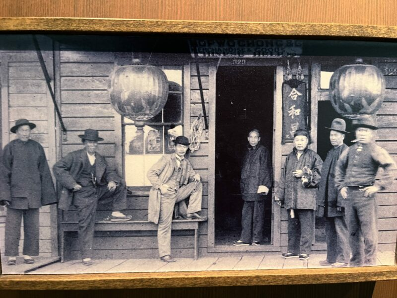
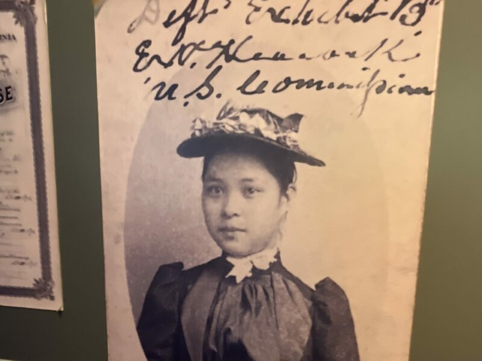
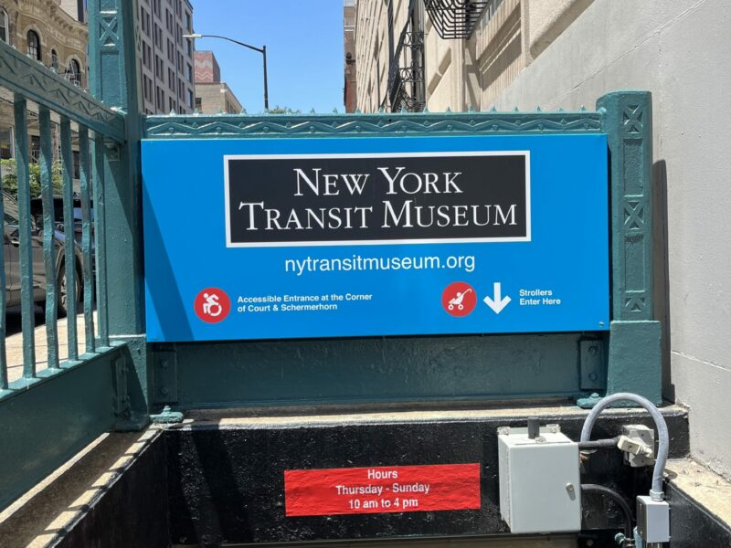
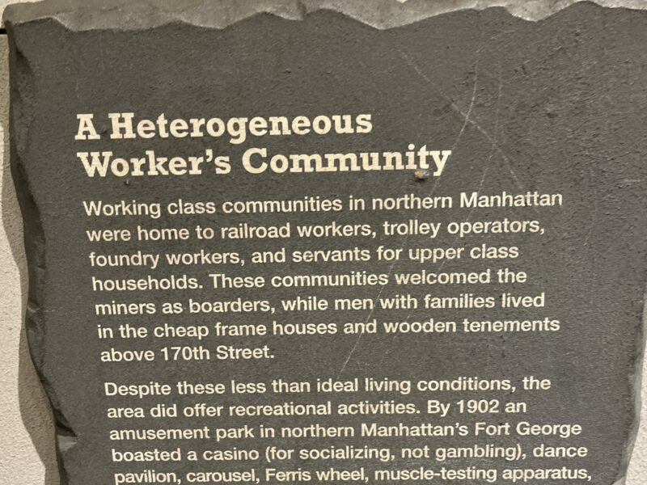
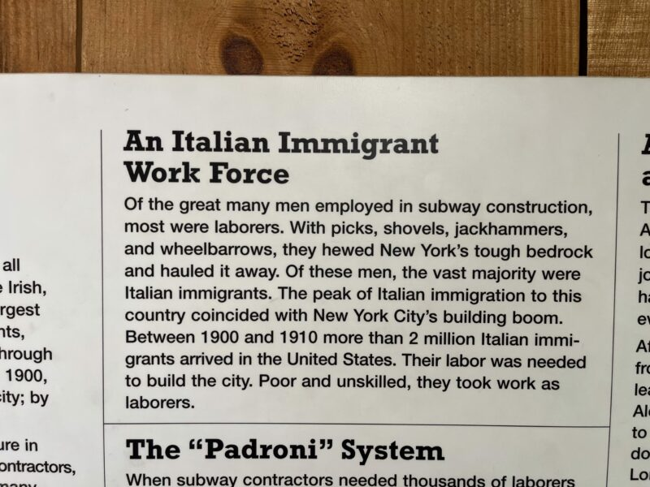
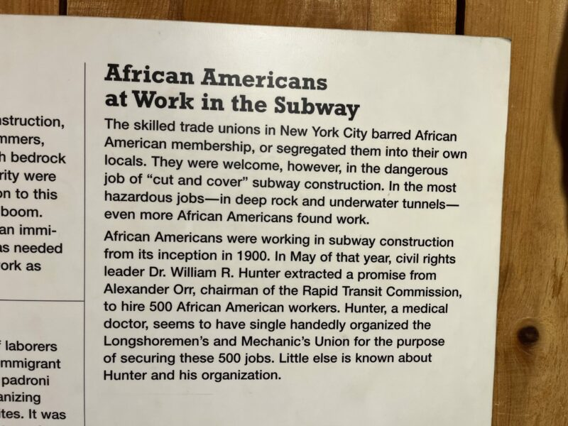
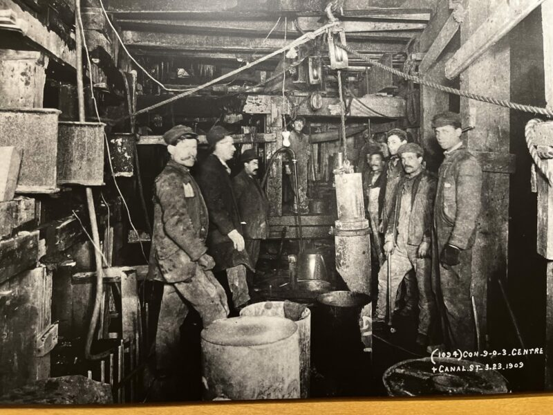

Visual archive
Photographs from the research journey.
Field photographs and collection materials gathered through research connected to the Museum of Chinese in America and the New York Transit Museum.






